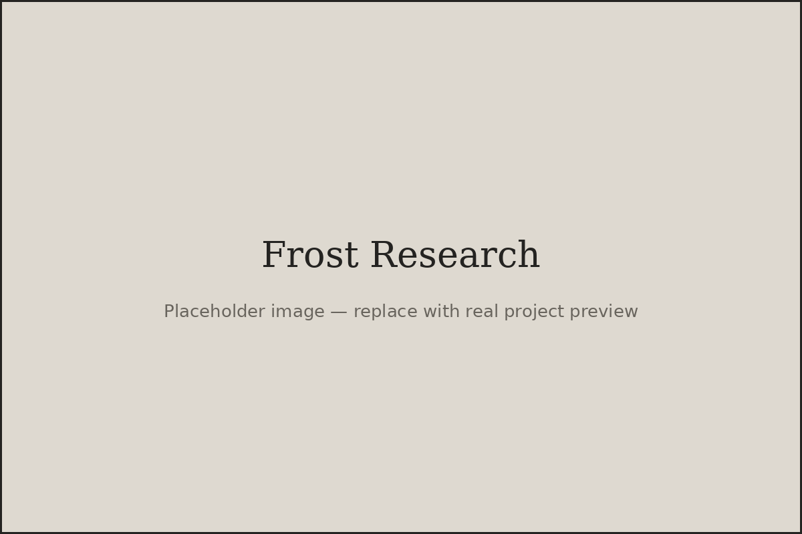

Research presentation
Collaborative Keys, coding adaptations, and findings related to student course outcomes.
View Frost2025.pdf ↗Frost Summer Undergraduate Research Program · Cal Poly
A learning-analytics study of how students collaborate, ask questions, and build understanding in an asynchronous introductory statistics course.
Project overview
I analyzed written interactions from 33 undergraduate students across a 10-week asynchronous introductory statistics course. The research used the Community of Inquiry framework to study social, cognitive, and teaching presence within Collaborative Keys: group assignments where students work through statistical questions together.
Agreement, self-disclosure, and questions appeared frequently in students' exchanges, while patterns of social presence varied more between groups than within groups over time. The analysis also found a weak positive relationship between total social presence and final course scores, highlighting a useful direction for future research on engagement in online learning.
Research materials
Collaborative Keys, coding adaptations, and findings related to student course outcomes.
View Frost2025.pdf ↗
A visual overview of the social-presence analysis, key patterns, and future research directions.
Open poster ↗